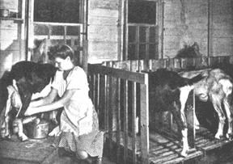
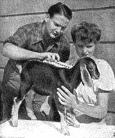
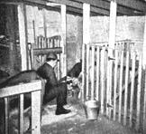
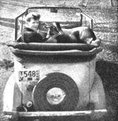

The Modern Dairy Goat
The Robinsons talk about raising goats, from the Have-More Plan.
By the Mother Earth News editors
March/April 1970
Of all our farm animals the least appreciated, by city friends who visit us are our goats. "Goats! You don't actually keep goats, My goodness, why?"
"Have you ever tasted goat milk?" we ask.
"No - and I don't want to!" is the answer more often than not. But, possibly at lunch time, we serve them two half-filled glasses of milk. "One is goat milk - one is cow milk . . . Just for fun, tell us which is which," we say.
Almost invariably our city guests can't tell them apart. Sometimes, if they've read that goat milk is whiter they can guess. But they always are amazed that our goat milk has no "strong" taste.
In the face of the public's misunderstanding of the dairy goat it takes courage to decide to keep them. Here's how we happened to do so.
One day when we sat down and figured what our milk, butter and cheese cost we found we were spending about 25% of our food budget in the dairy department. This was in line with what nutritional experts recommended. It was obvious then that production of our own milk ranked with raising our own fruits and vegetables from an economic as well as a nutritional standpoint. We figured on a garden and fruit trees plus a cow or goat to supply milk, cream, butter and cheese and we'd have one-half of all our family's food requirements.
Of course, either a cow or a goat can be stall fed and be given only a small exercise yard. But, ideally, a cow requires 1 to 2 acres of good pasture, an hour a day of care, and supples 10 to 20 quarts of milk a day. Ideally two goats require less than an acre of pasture (brush, fern and shrubbery are their favorites), 30 minutes a day, and provide 3 to 7 quarts of milk daily, the year round. A goat eats only 1-/16 of what a cow needs. Goats are freer from disease so that both animal and milk are safer.
For the small place everything is in favor of the goat except a goat's reputation. Believe it or not, the modern dairy goat is almost the exact opposite of what the American public believes she is. As we have already said, the prejudice against goat milk is unfounded as far as our experience is concerned
What the Goat Gives You
Let's make a list of all the products the dairy goat can furnish you:
1. Milk, not just ordinary stuff, but a a rich, full-bodied milk. Goat's milk is naturally homogenized, small fat globules make it easier to digest. Frequently, it's used for invalids and children alergic to cow's milk. It's fine in coffee and makes a delicious, smooth ice cream. Also, goats are easier to milk.
2. Cream. Goat's milk has lots of cream, but it rises very slowly. Consequently, it is best to have a small cream separator. The cream may be whipped or used in any of your customary ways.
3. Butter, unusually smooth in texture, pure white, easily colored just as cow butter is colored.
4. Cheese. You have probably already enjoyed goat's cheese as millions of pounds are imported from Europe besides the domestic supply.
5. Meat, or chevon, as goat's meat is correctly named. Young buck kids 4 or 5 months old provide 35-45 pounds of dressed meat. Chevon makes many succulent dishes, and in the South particularly is considered a great delicacy.
Most likely you have eaten chevon without knowing it - thousands of pounds are sold each year as lamb. We think it is tastier than lamb, but Mrs. R. found it should be cooked a little longer.
6. Furs and Skins. Furs from newborn kids are beautiful and may be made into coats, jackets. A tannery or furrier can prepare the hides for you.
7. Fertilizer. Goat manure is one of the richest, most valuable manures - excellent enough to be in demand by greenhouses and fruit growers. You, however, will want to use it liberally yourself, for it will help you "have-more" vegetables, fruits and flowers. Of all manures, it's the most inoffensive. You can see why from children's name for it, "nanny goat berries."
Considering all the products, the modern dairy goat is a valuable asset. Because of a goat's size a small barn is satisfactory. Also when it comes time each year to breed a goat you can hoist her into your car easily and get her to a buck. Goats are so easily handled that women frequently run large dairies.
Perhaps we seem unduly enamoured of our goats so we include this letter sent to the "Dairy Goat Journal," a magazine, (October, 1943) . We quote: I purchased a grade doe for $15 which is giving me 3 1/2 quarts a day of excellent quality milk. Two quarts of cow milk had been costing me $8 per month. A grade cow would cost me $75 to $125 so I am somewhat amazed when people speak of milk being expensive and hard to obtain. I had a laugh when the editor of a farm magazine said that something should be done about it when an old stinky goat beat an honest dairyman out of $7 or $8 a month.
My goat is giving $13.65 worth of milk a month and her feed costs about 10 cents a day. She doesn't stink either!
This checks with our own experience - except our goats cost more than $15.
Cost of a Goat
A good goat now costs considerable since their value is being recognized rapidly. Our first goat, a grade Nubian doe, with her two kids cost us $40. Our second goat (a young doe) was given to us by a friend who has a 20-goat dairy. Our third which was shipped to us 2,000 miles from one of America's best goat breeders cost us $49, including shipping.
We now have two milking does. When they first freshen they produce a total of eight quarts a day. Eight or nine months later, before we dry them up, they are producing 1 1/2 to 2 quarts a day. A goat generally gives more milk on her second and subsequent freshenings than on her first. Five to seven quarts of milk are easily used by a family of three. It takes about 8 or 9 quarts to make a quart of cream or a pound of butter.
Goats are sensitive to changes of ownership and home. It takes them several months to adjust themselves completely. In fact, they become so closely attached to individuals that they give more milk to the person who stands by them at kidding time and handles their new-born young.
We believe the perfect solution to the family milk supply is two milk goats. Two grade goats are better than one purebred for several reasons. You can arrange to have milk all year round by breeding one goat in September, the other in January. Two "three-quart" grade does cost less than one fancy six-quart doe as six-quart does are rare and cost $100 to $200. Goats also love, companionship and will give better results when they have company instead of being kept in solitary confinement.
There are three ways of starting your miniature goat dairy economically:
1. You may buy four month old kids for about $15 or $20 and raise them to breeding age (about 15 to 18 months). They'll cost $10-$15 a year to keep.
2. You may buy a purebred goat past her prime, breed her to give you good young stock. Goats reach their peak at about 6 years, but live to be about 12 years old.
3. Or you may buy a good common doe, breed her to a purebred buck and improve your stock while getting milk at the same time.
We are working on the third plan ourselves and think it's the best. Kids from a good doe pay for her upkeep. The only drawback to raising your new kids (the doelings for future milk stock and bucks for slaughter) is their need for part of your milk supply. A kid should have a quart of milk daily for at least 2 months but we find we can substitute skim milk we have left after separating the cream, or substitute cheaper evaporated or powdered cow's milk after kids are a few weeks old.
Goat Breeds
If you decide to buy a dairy goat you will find there are three popular breeds - Nubian, Saanen and Toggenburg. Keep away from the ordinary, shorthaired American goat, commonly known as the old "alley goat." Goat breeders as a whole will not recommend one breed above another.
We chose the Nubian because it gives the richest milk rather than large quantity and .because of the popularity of the breed in our section (an important consideration when breeding time comes). It is not profitable for the small goat owner to keep a buck - a registered purebred buck is expensive, must be housed separately from the does as he is responsible for the unpleasant odor. Nubians range from cream to black in color, have long drooping ears and distinctive Roman shaped noses.
The Saanens are white or light cream and are the heaviest milk producers. The two goat dairies we know best have both Saanen and Nubian goats - thus combining the highest in quality with quantity.
Toggenburgs are brown with two white stripes down the face and white hocks. Toggenburgs are a popular breed. French Alpines and Rock Alpines are two other breeds relatively new in the United States.
Guides to Buying
1. Visit several goat dairies. To locate dairies subscribe to one of the four dairy goat magazines, ($1 per year) and look at ads. Or contact your County Agricultural Agent.
2. See the goat that interests you milked. Ask for her milk record if the dairy keeps records. Milk is measured in pounds. One pint equals one pound. A good goat gives 3 to 6 pounds a day.
3. Look for a goat with depth of body and well-sprung ribs - points which indicate good food capacity.
T he udder should be large and even, carried well under the body and with good-sized teats for easy milking.
5. Get a hornless doe or one disbudded. Horns are dangerous to other goats, children and the milker.
6. If the goat is registered get her papers at the time you buy - proof of registered stock means the doe's value and her kids will be higher if you wish to sell.
Housing A home for your dairy goats may be as simple or expensive as you wish as long as it keeps goats, feed and living quarters clean and dry. Whatever housing you do provide, plan the arrangements well. Place your pens, stalls and feed so that you take as few steps as necessary. Each minute saved on twice-a-day chores means 12 hours less work a year.
If you are just starting the "Have-More" Plan and cannot afford to build a miniature barn you may use any small, draft-free building you have or can buy secondhand. A shed 6' x 10' can accommodate two does. At kidding time, divide the pen into two smaller pens by use of a hurdle. A wire floor of 3/4" heavy gauge mesh, held off the pen floor by a lumber frame keeps bedding dry and goats clean. A feed rack of wood slats will keep goats from wasting hay. (The grain ration should be fed in heavy, hard to tip-over, individual pans which can be bought for about 50c each.)
If you can build or develop part of your barn especially for the goats, you will find a miniature dairy attractive and easy to keep clean. We built our small barn to house laying chickens and our broiler battery in one part, goats, rabbits, sheep, and pigeons in the other. The floor is of cement which is easy to wash, especially with its small dairy gutter, running behind goat stalls. The 18" wide gutter is on a slight slope toward the wall with its own small opening to the outside. Thus dirt, manure and other trash may be swept into the gutter and outside into an iron wheelbarrow.
O ur goat stalls are built of wood, on a wooden platform 8 inches off the floor. Each stall is 24" wide and 35" long and divided from the next by a partition 32" high. In front of all the stalls runs a long feed manger. Stalls are separated from the feed rack by slats or solid walling with keyhole opening .for goats' heads - this keeps them from wasting hay. A feature we developed to keep a milking goat clean is a removable individual stall floor, the front solid, the rear slatted. Manure falls through the slats into the gutter and also doesn't get tramped down so it's hard to remove. Each stall's floor can be lifted out, cleaned easily and dried in the sun.
The goat barn should open directly to the pasture enclosed by a sturdy wire fence 4' high - goats are agile jumpers. Goats may be tethered on chains or ropes with swivels at both ends to prevent tangling - but tethering takes too much time.
Feed and Health
It costs about 10 cents a day to feed a producing doe when you buy all the feed. Goats relish stale bread and other kitchen scraps providing these are clean and free from mold. Contrary to popular opinion, we found goats meticulous in their food habits - they won't touch food dropped on the floor or contaminated in any way. And they dote on variety - my wife says they take after me (or vice versa).
During the winter a milking doe should have about 2 lbs. of alfalfa or clover hay (750 pounds yearly which you can raise on 1/4 of an acre), 1 1/2 lbs., when possible, of corn 'silage or roots (turnips, carrots, etc.) and 1 to 2 lbs. of grain ration. When on pasture, we feed less grain, only a little hay, no 'silage. The mixing of grains is too complicated for us - it's best to buy a prepared ration sold by a reputable hay and feed dealer. Clean warm water should be supplied at least in the morning and night and goats encouraged to drink (a few drops of molasses in the water makes it appealing.) Salt bricks should be accessible at all times.
Goats are naturally healthy, hardy animals and if they are well cared for you should have no trouble. They rarely get tuberculosis (as cows do) or Bang's disease, one cause of undulant fever in humans. We are following the rule required of dairies - having a veterinarian test the goats twice a year.
As a final precaution, you can pasteurize your milk by heating it to 142° F and holding it at this temperature or slightly higher for 30 minutes - or raise to 160°F for 15 seconds. In either case milk should be cooled rapidly by putting container in ice water. Also, we suggest you have a vet the first time your goat kids - just for your peace of mind, as goats seldom have any trouble giving birth. You can expect 2 kids at the second kidding and you may get 3.
How to Milk
"How did you learn to milk?" is one of the most frequent questions our city friends ask. We truthfully answer, "by reading how." So can you. Here's how:
Sit with your right side next to the doe's right side, your shoulder close to her shoulder. Hold the teats, thumbs outside fingers. Close your grasp, beginning at the top (thumb and index finger) and successively close the other fingers, thus forcing the milk down the teat and out. Milk firmly but gently until milk stops flowing. Then strip the teats by running the thumb and first finger from the top of each teat to the bottom until the last drop is out. Gently nudging the bag encourages the milk flow. You will be slow and awkward at first as you will have to think about each step but it won't be long until you'll be doing is so casually you'll be surprised at people asking you where you learned.
We warn you that the first few milkings may seem like desperate events in your life - we laugh and laugh now when we look back at our struggles. Don't try to learn with just one hand. Use both hands from the beginning and keep a firm hold even if the doe tries to move around. She will test you out a time or two but you can keep her right front leg in place with your right shoulder and her right rear foot in place with your left wrist. Once you show her you won't let her go she will be quite patient with your efforts.
You will want a small milk stand which you can easily build yourself. It is simply a small stand about 1 1/2' off the floor - 40" long and 22" wide. At the front end you place posts 55" high and slats 4 1/2" apart with one slat movable so that the goat's head can go through before you straighten the slat up to hold her in place. A rail on the side opposite the milker keeps the goat from moving too freely. See picture of our homemade milking stand.
When it comes to handling your milk I think you'd better do what my wife tries to do - follow dairy rules as well as you can. She insists on using a disinfectant (planned for milking equipment) on the milk pail, milk jars (we use canning jars because of their wide mouths) and in water used to wash the udder. The teats and the milker's hands must be dried thoroughly before milking, the first stream of milk from each teat thrown away. We strain the milk through filters, discarded after use, then set the jars of milk in ice water as rapid cooling creates a healthier, better-tasting milk.
Pasteurization with a tested goat is up to you. Raw milk certainly tastes better and some experts say it has more food value.
When it comes to feeding milk to your kids, by all means pan feed them. If you let them nurse, you lose control of your milk supply. Bottle feeding is a messy affair. After the kids are born place them in a box or basket so they cannot get out to their mother. After you pan feed them a few days they will not try to nurse and can run with the mother. Dip your finger in the milk, let them lick it and get them to follow your finger into the pan. After a time or two your only trouble will be keeping the milk from being spilled as the kids dash for it. Feeding the kids is fun even though commonly called a "chore."
Time Savers
1. Try to have running water in the barn or as close as possible.
2. Store feed close to feed racks to save time and mess.
3. If you build, plan a dairy gutter sloping to an outside opening of its own.
4. In the pens build racks of slats or heavy wire mesh to stand an inch or so off the floor to keep bedding cleaner and drier.
5. In the stalls place removable wooden racks for ease in cleaning.
6. Fence in a pasture if possible - the initial work is easier than continuous tethering.
Suggested Reading:
Complete Plans for a Small Barn, 16 x 30 feet, showing how to construct, also to arrange interior to house 25 to 40 laying hens, a broiler battery, 3 to 8 goats or one cow, 3 to 30 rabbits, 2 sheep, and a pigeon loft. Complete specifications and working drawings for barn and equipment-$2.25.
Starting Right With Milk Goats
- by Helen Walsh- $3.00.
|
 Milking a goat is far easier than milking a cow. Notice 4-quart milk pail partially covered to help keep milk clean. |
 Wilhelmina at 1 month. |
 Wilhelmina at 22 months. |
|
 Two pens for kids or maternity ward. A 3/4"" wire mesh floor tacked to 1"" x 2"" wooden frame and laid over cement floor keeps bedding in kid pens fresh longer. |
 Even a Crosley is big enough to carry your goat. Mimi is on her way to visit Ptolemy, a prize Nubian buck. |
|